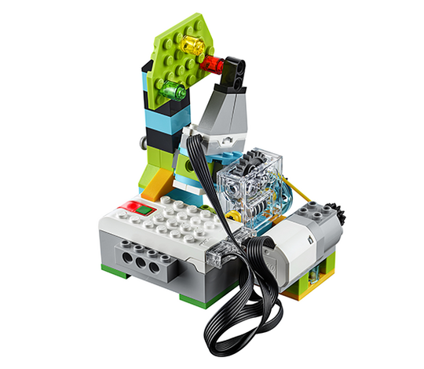

Characteristics of the Model
The students will build a device that will provide scientists with information about volcanic activity. When the device is shaken, the needle of the device will run for a random amount of time and stop in front of one of the coloured bricks. This will simulate an alert system to indicate the volcanic hazard level in the area.
